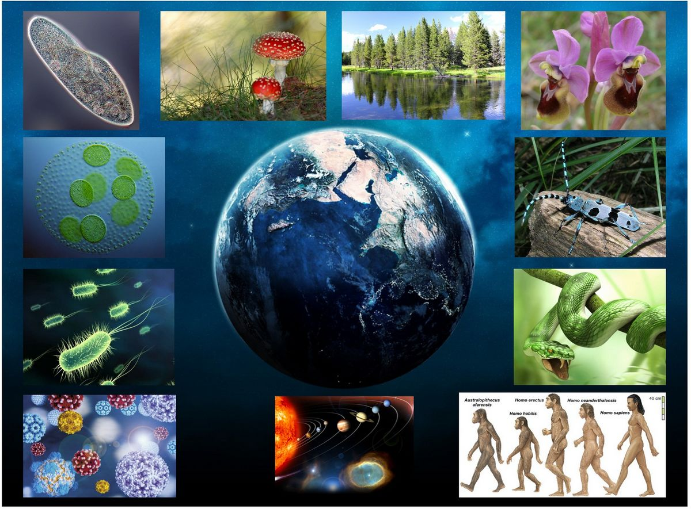

las tres ramas de la ciencia
Las ciencias naturales son el conjunto de disciplinas científicas que se dedican a estudiar los fenómenos de la naturaleza, la materia, la energía y la vida en todas sus formas. Su propósito es comprender las leyes y principios que rigen el mundo físico y biológico, desde las partículas más pequeñas hasta los sistemas más complejos. A través de la observación, la experimentación y el análisis, las ciencias naturales buscan explicar cómo funciona el universo, cómo interactúan los seres vivos con su entorno y cómo se transforman los elementos que lo componen. Estas ciencias constituyen la base del conocimiento científico y permiten desarrollar aplicaciones prácticas que impactan en la tecnología, la medicina, la industria y la vida cotidiana, contribuyendo al progreso y a una mejor comprensión de nuestro lugar en el mundo.

para mas informacion visita la siguiente pagina: info